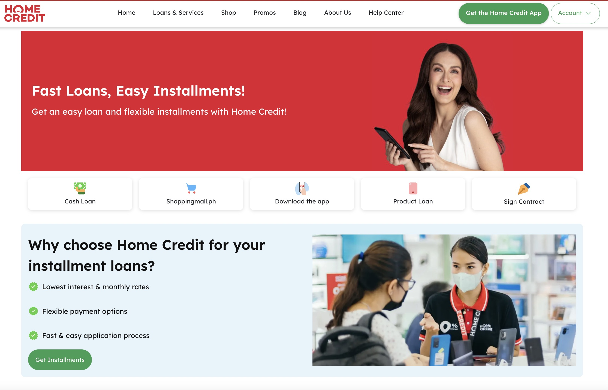
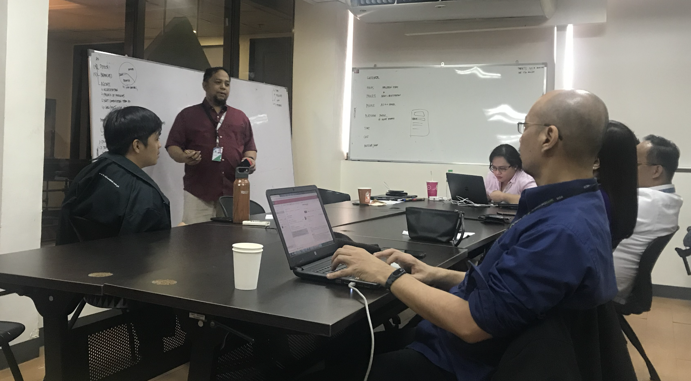
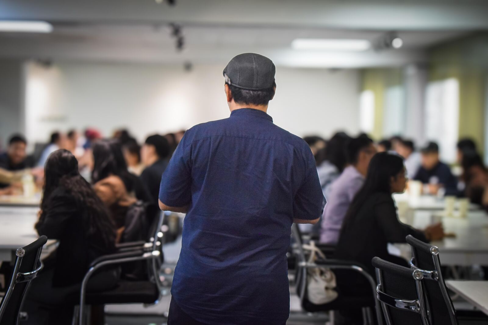
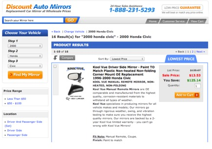
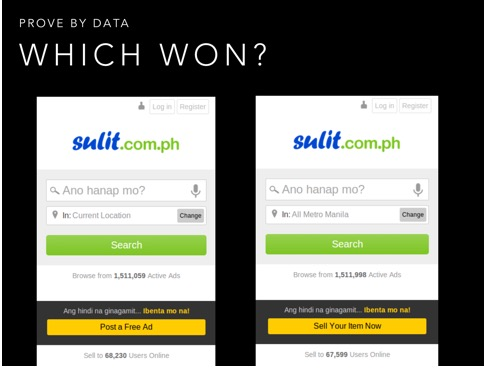
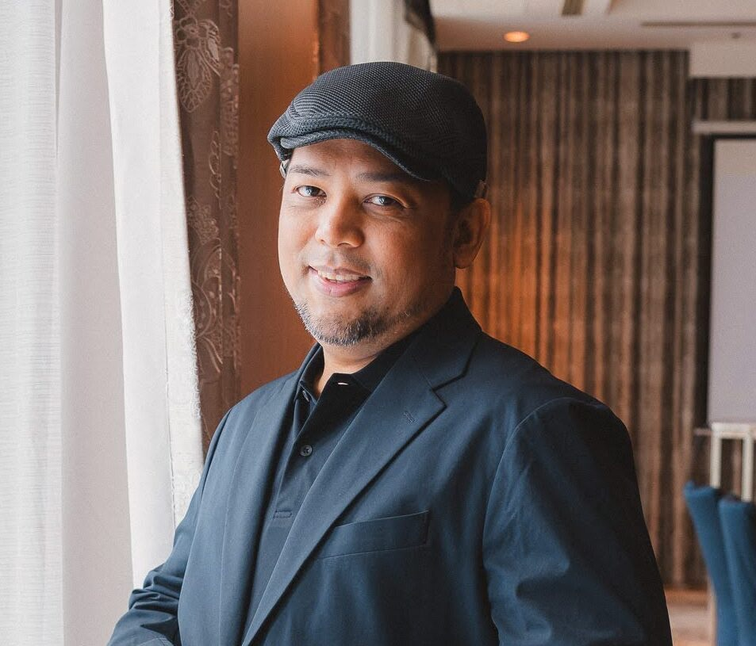

2250% Growth: Home Credit Digital Transformation
Led a 13-person UX team across web, mobile, and enterprise platforms, growing monthly page views from 2M to 45M.
UX & Product Leadership
I'm Elymar Apao, a Tokyo-based UX and product leader who turns ambiguous business problems into clear, testable customer experiences.
Portfolio
Case studies focused on growth, service design, experimentation, and community building.

Led a 13-person UX team across web, mobile, and enterprise platforms, growing monthly page views from 2M to 45M.

Led design sprints and service design programs that helped teams generate revenue within six months.

Built a national community for Filipino UX professionals through meetups, workshops, and shared learning.

Designed and launched a price-transparent ecommerce experience that immediately generated daily orders.

Used experimentation to resolve product debates and establish evidence-based design decision-making.
By the Numbers
Measurable outcomes across digital transformation, revenue generation, and team leadership.
Web traffic at Home Credit
Pesos via UX innovation
Designers and researchers led
Asset growth contribution
Career
Senior UX Designer & Team Lead
2018-2022 · Philippines
Led a 13-person UX team and achieved 2250% web traffic growth.
UX Design Lead
2016-2018 · Philippines
Generated 10M pesos in revenue through innovation programs.
UX Designer
2013-2016 · Philippines
Established data-driven design culture through testing and optimization.
UX Designer
2009-2013 · Remote / USA
Launched ecommerce sites producing 20-100 daily orders.

About
I'm Elymar Apao, a UX and product leader who turns messy, ambiguous business problems into measurable growth. From founding UX Philippines to leading teams at scale, I combine strategic thinking with hands-on craft.
Tokyo-based UX leader specializing in B2B SaaS and digital transformation.
Get in Touch
I'm actively seeking Product and UX Leadership opportunities in Tokyo. Let's discuss how I can support digital transformation with clear product strategy and strong execution.
elymar.apao@gmail.com